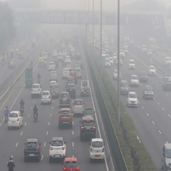

|

|
Nghiên cứu cho thấy ô nhiễm không khí có thể làm tăng nguy cơ mất trí nhớ
Hít thở không khí ô nhiễm có liên quan đến nguy cơ mất trí nhớ cao hơn, theo một phân tích từ các nhà nghiên cứu Đại học Harvard. Các nhà khoa học này đã xem xét các nghiên cứu khác nhau được thực hiện trong vòng 10 năm qua đánh giá mối liên hệ giữa ô nhiễm không khí xung quanh và chứng mất trí nhớ . Hầu hết các nghiên cứu tập trung vào các chất gây ô nhiễm không khí dạng hạt mịn, gọi là PM2.5.
|